Syncopated Imperfection and Alteration in Tinctoris’s Theoretical Writings
Ronald Woodley (Birmingham Conservatoire, Birmingham City University, UK)
Earlier versions of some of the material in this article were presented at the 41st International Congress on Medieval Studies at the University of Western Michigan, Kalamazoo in May 2006, and at the Annual Meeting of the Renaissance Society of America in Venice in April 2010. A paper version will be published in Vela et al. forthcoming. This online text generally replicates that of the printed volume, with the exception of some necessary reformatting of bibliographical references and footnotes. In both the printed and online versions of the article, however, there are some relatively minor differences of, for example, translation from the Latin, punctuation, terminological detail, and the choice of clefs in certain musical examples from Tinctoris’s treatises, as compared with the more recently edited texts and translations of the present, full Tinctoris project, which are based on revised editorial principles. These differences do not have any substantive effect on the arguments presented here.
I would like to record my thanks to Margaret Bent for her comments on an earlier draft of this article.
It must be admitted that, even within the small world of medieval notation scholarship, imperfection and alteration are not normally topics to set the heart racing. Whilst recognized as notational principles intrinsic to the mature mensural system of the later Middle Ages, they are generally still learnt by students and scholars, for understandably pragmatic purposes of editorial transcription, through secondary textbooks, such as those of Willi Apel (Apel 1953), Richard Rastall (Rastall 1998) or Carl Parrish (Parrish 1959), rather than through primary sources. Indeed, Tinctoris’s important treatises on these subjects from the 1470s – his Liber imperfectionum notarum musicalium and the Tractatus alterationum, along with the closely related essay on the musical dot (point), the Scriptum … super punctis musicalibus – have until now existed only in poor editions.1 Furthermore, and crucially for modern readerships, none of these three treatises has ever been published in either English or, as far as I am aware, any other modern language. As a consequence, their detailed, comprehensive and remarkably finely nuanced contents are still largely unfamiliar to all but a few highly specialist scholars of historical notation.
To some extent the neglect of these central writings on the late stages of the mensural system has been due to the tacit assumption that they transmit only basic notational precepts, compiled by Tinctoris for elementary pedagogical purposes, and hence adequately learnt today through abbreviated secondary sources. While such a pedagogical impulse certainly drives Tinctoris’s persona as a theorist, these treatises in fact display an at times breathtaking sophistication in pushing the longer-range and unexpectedly syncopational potential of these metrical/rhythmical principles to their limits. We often associate such notational sophistry with the rather earlier, and relatively circumscribed, repertories of the so-called ars subtilior; but it is clear from Tinctoris’s work that core pedagogical writing of the later fifteenth century could also eagerly encompass such complexities in this ostensibly rather arcane area of notation just as readily as through the more familiar problematics of, say, mensural signatures. At the technical extremes of Tinctoris’s exposition, any superficial sense of necessary ‘practical application’ must give way to an acknowledgement that the unique semantics of the mensural system are, at least partly, being explored as much for their intrinsic intellectual value as for any day-to-day requirements of polyphonic composition.
Perhaps, though, even this notion of ‘intrinsic intellectual value’ is not quite correct, for – often frustratingly for the modern scholar – Tinctoris’s more innovatory perceptions tend to be made in a frankly rather en passant fashion: what seems interesting to us today was often less so to the author himself. The prime motivation in most of his pedagogical writing is to provide a practically orientated compendium of relatively traditional theory, updated, refined and repackaged as far as possible so as to give comprehensive, working musical examples of notational phenomena where earlier writers were more likely to rest content with largely verbal, abstract explanation. Imperfection and alteration are both good cases in point. The classic fourteenth-century texts which grapple with these new and related mensural phenomena, in particular those by, or surrounding, the figure of Johannes de Muris, are often more interested in their philosophical ramifications for the nature of the whole and part, the logic of division, the continuity of time, and in the opportunity they afford for a totalizing categorization of their permutations, than in their actual sonorous, musical embodiment.3 (Dorit Tanay has much of interest to say on these aspects of ars nova mensuration in her 1999 monograph (Tanay 1999), a rare and valuable attempt to view medieval notation in its wider philosophical and mathematical context.) By contrast, perhaps, we see in Tinctoris an example of what we might think of as active rather than passive music theory. He is not simply giving the reader a set of conceptual tools with which to frame, reference and interpret what will be found ‘out there’ in the ‘real world’ of polyphonic composition; he is also taking positive pleasure in demonstrating in a practical way what rhythms and combinations of rhythm are possible and available to a composer from a full deployment of the mensural system. In this sense, his texts belong not to the realm of theory at all, but rather to the world of propaedeutics.
We may think that we understand the essentials of imperfection, but in truth even the treatment afforded the subject in Apel’s standard textbook (Apel 1953: esp. 107–12) is distinctly economical in its coverage, terminology and detailed logic. This is especially true of the fundamentals of how the mutual relationships between the whole and its hierarchy of constituent parts are articulated. Let us take an all-perfect maxima as starting-point. This maxima can, of course, be imperfected (i.e. reduced from its full, intrinsic value by one third) at the most immediate level by one of its three constituent longs: in Tinctoris’s strict terminology, the maxima is being imperfected quantum ad totum (with respect to the whole) by one of its partes propinque, or neighbouring parts, that is, the longs, which sit at the next mensural level down. Since these neighbouring parts, in this mensuration, are also themselves intrinsically perfect, each of the two remaining longs (i.e. after the discounting, as it were, of the imperfecting long) is also available for imperfection by one of its own constituent breves. These breves are partes propinque, or neighbouring parts, of the longs, but are partes remote, which I translate here as ‘parts at one remove’, of the original maxima. The maxima, then, if it continues to be imperfected to the maximum possible extent by these breves, is said to be imperfected quantum ad duas partes propinquas (i.e. with respect to the two ‘neighbouring’ longs at one level up), but a duabus partibus remotis (i.e. by two parts at one remove, namely the breves). It is this crucial distinction between the notion of being imperfected with respect to a given whole or constituent part(s) at a particular mensural level, and being imperfected by one or more constituent part(s) at another level, that is often overlooked by modern scholars.
To continue with the same example: once this level of maximal imperfection is achieved, each of the four remaining breves (partes remote of the maxima) is available to be imperfected by one of its own constituent semibreves, which are partes propinque of the breves, partes remote of the longs, and partes remotiores (‘parts at two removes’) of the original maxima. So at this level, the correct terminology is that the maxima is being imperfected quantum ad quattuor partes remotas (i.e. with respect to the breves, the four remaining parts of the maxima at one remove), but a quattuor partibus remotioribus (i.e. by four parts at two removes, the semibreves). And finally, each of the remaining eight semibreves, after the previous level is exhausted, is available to be imperfected by one of its own constituent minims, which are partes remotissime, or parts of the maxima ‘at three removes’. So, again, the correct terminology is that, at this level, the maxima is being imperfected quantum ad octo partes remotiores (i.e. with respect to the eight parts at two removes, the semibreves), but ab octo partibus remotissimis (i.e. by eight parts at three removes, the minims).
Figure 1. Maximal imperfection of an all-perfect maxima (reduced from 81 to 16 minims)
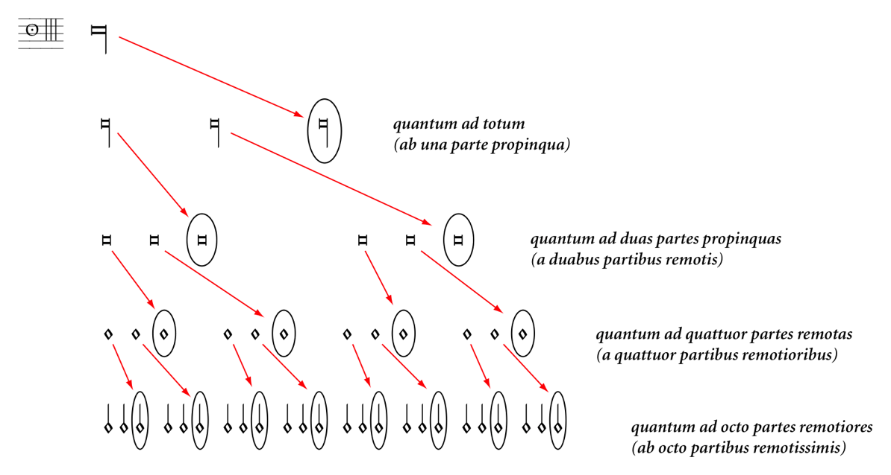
The process described here, of course, demonstrates the maximum number of parts, at each level, by which the all-perfect maxima can be imperfected (see Figure 1). Nevertheless, at any stage in this process a smaller degree of partial imperfection is entirely possible (indeed usual), with shorter notes also able to be re-compounded into longer ones, and of course further restricted by the possibility of any of the four mensural levels (major modus, minor modus, tempus and prolation) being itself intrinsically already imperfect (or, in the case of prolation, ‘minor’). But even in this abstract, all-perfect example, the initial imperfection quantum ad totum is not itself a prerequisite for the subsequent levels; so, for instance, at one level down, one of the partes propinque (i.e. the longs) might yield a breve, and two further partes remote (the breves) might yield one semibreve each. The resulting imperfection of the original maxima by five semibreves would then be technically described as quantum ad unam partem propinquam et duas partes remotas, or ab una parte remota et duabus partibus remotioribus. Alternatively, and at one extreme of the spectrum, only one of the twenty-seven available semibreves may be needed to yield up its minim for the required duration of the maxima, hence an imperfection quantum ad unam partem remotiorem or ab una parte remotissima, giving a maxima worth 80 rather than its intrinsic 81 minims. At the other extreme, it is remarkable that within this system an all-perfect maxima, in its most complete state of imperfection (as in Figure 1), can be reduced in value by a full 65 minims’ worth, from its original value of 81 minims right down to 16 – in other words, to the duration of less than two breves in this mensuration. The various permutations of imperfection available at each note level, and taking into account the different mensural configurations, are set out by Tinctoris with the greatest of care and notational finesse, both in the thirteen General Rules of imperfection contained in Book 1, and the more itemized, note-level-specific injunctions of Book 2, of the Liber imperfectionum. Even more valuably, each permutation is provided with a beautifully crafted music example, many of which require a considerable amount of concentrated study in order to tease out their full rationale and mensural implications.
When the system is set out in a clear, hierarchical, tabular format such as Figure 1, it is (at least in principle) relatively easy to follow. But when transferred to a slightly more real-world situation on the staff, as in Tinctoris’s many examples, the successive levels of imperfection do not, of course, necessarily follow each other in such a neat, linear fashion. Book 2, Chapter 3 of Tinctoris’s Liber imperfectionum is entitled, hardly encouragingly for the nervous student, ‘On the Fifteen Methods of Imperfecting the Maxima’ (‘De quindecim modis imperfectionis maxime’). The final example of the chapter, illustrating the fifteenth method, shows us how the maximal imperfection of an all-perfect maxima, such as we have been considering up to now purely in the abstract, might work out in practical notation, and it provides a usefully concise first exercise here in how an ostensibly quite straightforward notation can both conceal and reveal unexpected subtleties of thought. (It is, however, by no means the most complicated in the work: several others from the imperfection treatise, including two discussed here later, present a greater challenge in parsing a correct interpretation.)
Quintusdecimus modus imperfectionis maxime
Quintodecimo modo quantum ad totum, partes propinquas, partes remotas, et partes remotiores simul; et hoc in utroque modo perfecto, tempore perfecto et prolatione maiori, ut patet in presenti exemplo: [Figure 2]
Fif teenth method of imperfecting the maxima
In the fifteenth method with respect to the whole, the neighbouring parts, the parts at one remove, and the parts at two removes all at once; and this occurs in perfect modus of both kinds [i.e. major and minor], perfect tempus and major prolation, as is shown here: [Figure 2]
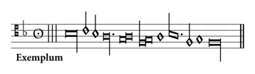
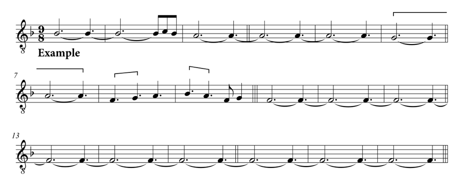
As with many of its fellow examples in this treatise, the general demeanour of Figure 2a suggests that it has been constructed by Tinctoris as if in the manner of some hypothetical tenor or contratenor part. In terms of mensural interpretation, it is probable that most scholars, confronted for the first time with this notation, would work from the initial assumption that the dot attached to the long indicates a punctus divisionis (dot of separation), grouping together the initial maxima, the following two (slightly anomalous-looking) minims, and the long, into the space of a perfect maxima. (The three initial perfect long rests indicate perfect major and minor modus rather than rests per se.) By this line of thinking, the maxima would be construed as being imperfected both quantum ad totum by the long and quantum ad duas partes remotiores by the two minims (a duabus partibus remotissimis). However, before we could get too pleased with ourselves for negotiating this little nursery slope, we would realise that something was very wrong, even without a second contrapuntal voice against which to check, because of the four breves’ worth left over, before the arrival point of the final maxima. We might even imagine, if we weren’t helped by the accompanying, explanatory text, that some kind of imperfection of the final maxima by these four breves a parte ante (‘from in front’: Tinctoris’s Eighth General Rule) was taking place – and, indeed, without the verbal text or other contrapuntal parts, this could indeed be viewed as a viable interpretation, were it not for the fact that Tinctoris is almost always punctilious about placing his final maxima (or occasionally long) in its ‘correct’ deep-level mensural position to complete an integral unit. The dot attached to the long, however, is crucial. If we read Tinctoris’s prescriptions regarding the dot, from his essay Super punctis musicalibus – incidentally, a much more interesting and technically finessed piece of writing than most of us may imagine – we can see that this cannot be, in Tinctoris’s eyes, a punctus divisionis at all. Instead, it must be read as a punctus perfectionis, indicating a perfect long, which nevertheless does imperfect the initial maxima quantum ad totum. As we saw in our previous, abstract model, the remaining values, including the two ‘displaced’ minims to the left of this perfect long which have not yet been accounted for, are calculated by Tinctoris precisely to enable the further imperfection of the initial maxima to its greatest possible degree. The two longs’ worth from the maxima, remaining after its imperfection quantum ad totum by the notated perfect long, releases two breves’ worth quantum ad partes propinquas, which appear as the two breves following the punctus perfectionis; in turn, the four remaining perfect breves at this level can release four semibreves quantum ad partes remotas (in relation to the initial maxima), which comprise the two semibreves in ligature cum opposita proprietate (not a term that Tinctoris uses), the next lone semibreve, and the first half of the following oblique ligature cum opposita proprietate. The eight remaining perfect semibreves at this level finally release eight minims quantum ad partes remotiores (still in relation to the original maxima), a process which enables the two displaced or anomalous minims near the beginning to be accounted for correctly along with the remaining six minims’ worth near the end (second half of the oblique ligature, plus the following minim and lone semibreve, itself imperfected by its preceding note). A correct transcription of the example, therefore, is as in Figure 2b, with the first maxima maximally reduced, as we have seen before, by 65 minims from 81 to 16 minims. (Note that in these transcriptions the level of modus minor (the mensural relationship of breve to long) is indicated by a double thin barline, and the level of modus maior (long to maxima) by a triple thin barline.) A graphical summary of the whole imperfection process in this example is given as Figure 3.
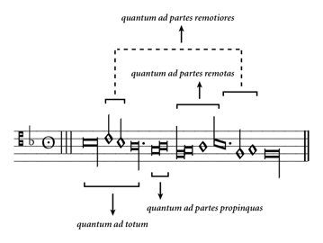
What seems to me to be especially interesting about an example of this sort is that it requires a process of comprehension that is essentially non-linear. Even the most dense of present-day, complexicist notation is usually, at least in principle, fairly readily graspable in terms of its durational requirements, even if its execution is seriously demanding. In Tinctoris’s strangely compelling little example, however, the duration of the initial maxima is in no way knowable, even by skilled fifteenth-century polyphonists, without prior, careful, non-linear contemplation of the mensural make-up of the phrase. The required retention in the mind of the multiple levels of ‘deficiency to be made up’ raises probing questions regarding the use of memory and anticipation, connecting with possible analogues within the fourteenth- and fifteenth-century evolution of mathematical computing, the rise in the use of arabic numerals, and the related, hierarchical conception of arithmetical place-value – what Alexander Murray, in his now classic 1978 book, calls ‘The Emergence of the Arithmetical Mentality’ (Murray 1978: Chapter 7, 162–87) during this whole later medieval period. It also seems to me that Tinctoris’s clear fascination with these subtleties of imperfection structure might be understood as an unspoken part of the much more fundamental evolution of an interest in notions of dissonance and resolution at this point in the bigger picture of music history. This is not a harmonic or contrapuntal dissonance, though, but a kind of metrical or mensural dissonance, which is held in the mind and in the eye rather than the ear itself, and which demands and achieves its own kind of temporal resolution as the various levels of perfection are played out and completed. Furthermore, the necessary processes of mediation between the mensural levels in Tinctoris’s examples – a kind of play with mensural perspective, perhaps – is suggestive of how his thinking inherits and develops what Tanay has called ‘the intention of fourteenth-century Nominalism to replace subordination with co-ordination, hierarchical opposition with continuous mediation’ (Tanay 1999: 267). There is a sort of counterpoint between, on the one hand, the local-level, aural phenomena of melodic contour, cadence, and implicitly harmony, with, on the other hand, a sense of ‘deep metre’ and deep-level syncopation that explores the continuities between the world of perception or contingent reality and the world of intellectual imagination and possibility.
In setting out some of the theoretical context for the correct interpretation of an example such as Figure 2 above, I have necessarily let pass, or have absorbed silently, many of Tinctoris’s more basic tenets governing the principle of imperfection, as he sets out especially in the remainder of his thirteen General Rules which comprise most of Book 1 of the Liber imperfectionum. A more comprehensive exposition of these must await a future study, but the outline given above does at least hint at one phenomenon that has been under-explored in this context: that of the syncopated use of imperfection. The example of Figure 2 has already introduced us to such a notion of metrical displacement, here between constituent parts in the process (e.g. the first two minims which require regrouping – Tinctoris’s preferred term for this is reductio – with the six towards the end). But there are many other examples in the treatise in which multiple such displacements, with their necessary regroupings and often taxing, non-linear calculations, including instances of displacement between the agents of imperfection and the larger note to be imperfected (also classed as reductio), are integral to understanding the rules of imperfection that Tinctoris is trying to convey.
Within the limitations of space available here, two such examples must suffice, the first of which is of only moderate complexity, while the second requires some considerable unpicking. Before this, though, Tinctoris begins his Ninth General Rule in quite straightforward fashion, illustrated by two examples which for present purposes are self-explanatory:
Nona regula generalis est quod si completo numero aut nullis precedentibus aliis nota minor sola ante maiorem ab ea imperfectibilem inveniatur, ipsam imperficit, ut hic: [Figure 4]
The ninth general rule is that if a single smaller note is found before a larger note which is imperfectible by it, provided that the correct quantities have been completed or that there are no other notes preceding, then it does imperfect that larger note, as here: [Figure 4]
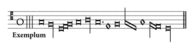
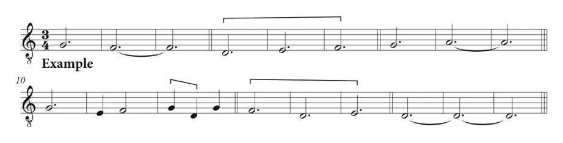
Si vero sola minor nota post maiorem ab ea imperfectibilem inveniatur, sive sequatur alia maior etiam ab ea imperfectibilis sive non, ipsam imperficit, ut hic patet: [Figure 5]
But if, on the other hand, a smaller note is found after a larger note which is imperfectible by it, whether or not there follows another larger note which is also imperfectible by it, then it does imperfect that preceding larger note, as is clear here: [Figure 5]
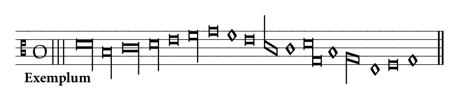
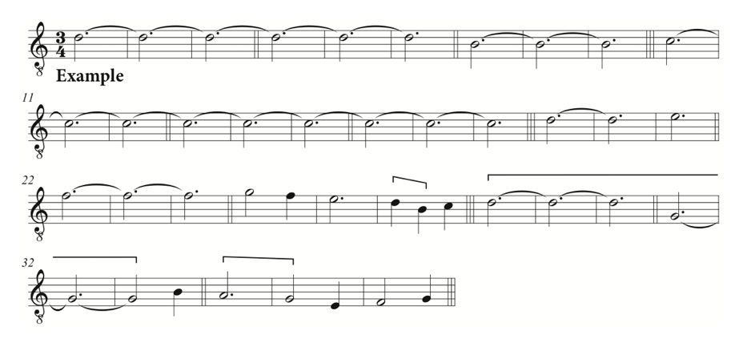
In essence Tinctoris is here dealing with the simplest case of a single smaller note imperfecting a larger one, stating that imperfection must occur when the circumstances call for it and when the numbers add up appropriately, and that imperfection a parte post has a certain priority over a parte ante where there is any ambiguity. The situation becomes a little more complex, however, where more than a single smaller note is involved, which do not in themselves form a self-standing, perfect unit:
Pariformiter si plures note minores completo numero aut nullis aliis precedentibus notis ante maiorem ab eis imperfectibilem in imperfecto numero constitute inveniantur, tot quot sunt aut possunt ipsam imperficiunt. Et si alique supersint etiam imperfecte numero, transibunt ad proximiorem locum quem habere poterunt, ut hic patet: [Figure 6]
Equally, if more smaller notes [i.e. more than one] are found set up in imperfect number before a larger note which is imperfectible by them, provided that the correct quantities have been completed or that there are no other notes preceding, then they do imperfect that larger note in whatever number they are, or are able to do so. And if there are any still remaining also imperfect in number, then these will carry over to the next closest location that they will be able to occupy, as is clear here: [Figure 6]
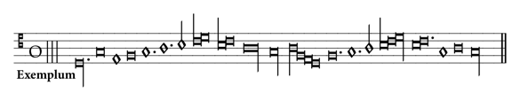
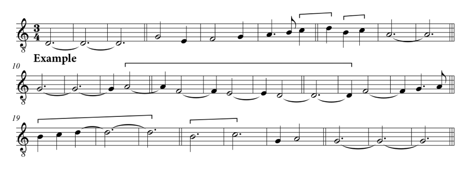
In this example the interpretation of the first few notes, at a local level, is clearly unproblematic: the punctus perfectionis is added to the initial long to prevent its imperfection by the following breve; this breve is in turn imperfected by its following semibreve (no punctus divisionis required), and the second breve is also imperfected by its following semibreve (punctus required to prevent grouping of this semibreve with its following two notes). The correct reading, however, of the value of the maxima at bars 8–9 of the transcription (Figure 6b), and that of the long at bars 10–12, and to some extent also the longs at bars 15–17 and 19–21, hinges crucially on an understanding of the implications of Tinctoris’s verbal explanation. The passage leading up to the maxima (bars 1–7) contains seven breves’ or twenty-one semibreves’ worth. In this mensuration the maxima can in principle be imperfected quantum ad totum by one long, or three breves, or nine semibreves, plus an additional six semibreves’ worth (two perfect breves) quantum ad partes propinquas, and finally a further four semibreves in their own right quantum ad partes remotas (a quattuor [or ab omnibus] partibus remotioribus). The maxima, therefore, may be reduced by a total of nineteen semibreves from an original integral value of twenty-seven semibreves down to a minimum possible value of two breves or six semibreves. (There is, of course, no possibility, pace Machaut, of imperfection quantum ad partes remotiores, since the semibreve is intrinsically imperfect.) According to Tinctoris’s precepts, then, nineteen of the twenty-one semibreves of bars 1–7 can act a parte ante to imperfect the notated maxima down to its minimum value of six semibreves, but the remaining two semibreves from bars 1–7, being ‘imperfect in number’ must ‘carry over to the next closest location that they will be able to occupy’. This next closest location must be the long following the maxima, especially since Tinctoris has been careful to construct the ligated group following this long, together with its own subsequent imperfecting perfect breve (with punctus divisionis), as a self-contained unit of two perfect longs, which cannot therefore impinge on the value of the single long following the previous maxima. This single long, therefore, must absorb or be ‘reckoned with’ the two semibreves carried over from bars 1–7, through syncopated or displaced imperfection quantum ad duas partes propinquas (i.e. a duabus partibus remotis), reducing it to the value of seven semibreves (bars 10–12). As a consequence, the self-contained unit of two longs’ worth following this long (bars 12–17) is itself pulled forward metrically from its expected position in the mensura by two semibreves to the left. But, as a further illustration of Tinctoris’s point, the ‘number’ is ‘completed’, that is, the unit of major modus is filled, by the dotted semibreve and minim of bar 19, with the result that the next long, at the end of the subsequent ligature cum opposita proprietate, is itself imperfected a parte ante only by the previous two ligated semibreves, not by the whole group of four semibreves’ worth, as would in principle be possible or necessary in this mensuration (i.e. quantum ad totum et unam partem propinquam). This long, then, is reduced in value from its integral nine semibreves down to seven rather than five (bars 19–21). Tinctoris has, again, further reinforced this interpretation by making sure that the groupings following this long (bars 22–7) are themselves complete in number, and so, analogous to the ligated group following the long at bars 10–12, cannot impinge on the value of the long.
Tinctoris follows this example with a further elaboration of the principle of carrying over any smaller notes remaining ‘imperfect in number’ from a previous grouping, this time from a position a parte post:
Si vero plures note minores in imperfecto numero constitute post maiorem ab eis imperfectibilem inveniantur, sive sequatur alia maior etiam ab eis imperfectibilis sive non, tot quot sunt aut possunt aut imperfectionem numeri tollunt, ipsam imperficiunt. Et si alique etiam imperfecte numero superfuerint, transibunt ad proximiorem locum quem habere poterunt, ut hic patet: [Figure 7]
If, on the other hand, more smaller notes [i.e. more than one] are found set up in imperfect number after a larger note which is imperfectible by them, whether or not there follows another larger note which is also imperfectible by them, then they do imperfect that preceding larger note in whatever number they are, or are able to do so, or in whatever number removes the imperfection in quantity. And if any are still remaining imperfect in number, then these will carry over to the next closest location that they will be able to occupy, as is shown here: [Figure 7]
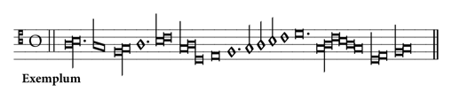
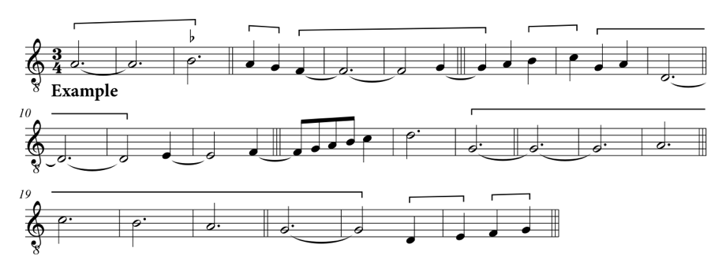
This is an example – for all its apparent innocence – constructed by Tinctoris with exceptional intricacy and theoretical sophistication. As with Figure 6, the beginning is straightforward: the initial long is imperfected quantum ad totum by its following ligated breve; the punctus divisionis is required, because without it the long would be further imperfected quantum ad duas partes propinquas by the subsequent two ligated semibreves (bar 4 of Figure 7b). The value of the next ligated long (bars 4–6) hangs, as before, on a proper reading of Tinctoris’s accompanying explanation, together with the implementation of the stricture concerning the punctus divisionis, as already seen at bars 1–3. The clearest part of the argument here is the imperfection of this long, again quantum ad totum, by the perfect breve-equivalent group (breve plus imperfecting semibreve) following; this group is once more separated off by a punctus divisionis preventing the subsequent two ligated semibreves b–c from being included in the imperfection of the long quantum ad duas partes propinquas, as previously occurred at bar 4. But looking ahead to the next crux, which is the value of the ligated long at bars 9–11, one might assume on the basis of the previous example (Figure 6) that the initial two semibreves from bar 4, still mensurally unaccounted for, would be carried over to imperfect this later long as potentially the ‘next closest location’ that it is able to occupy. However, Tinctoris’s injunction that such notes will be agents of imperfection ‘tot quot sunt aut possunt aut imperfectionem numeri tollunt’ needs to be heeded here; for these initial two semibreves group instead with the four ligated semibreves of bars 7–8, to form a displaced grouping of six semibreves, perfect at the level of tempus, but remaining for the time being imperfect at the level of minor modus until the remaining three semibreves can be made up later in the example.
One result of this grouping, then, is that the two ligated g–a semibreves immediately preceding the long as bars 9–11 cannot now imperfect that long a parte ante, quantum ad duas partes propinquas. One might, however, reasonably have expected this long to become imperfected quantum ad totum by its following breve (bars 11–12), by analogy with the long at bars 4–6. But Tinctoris has carefully constructed the phrase following this long to be ten semibreves’ worth, additionally clarifying the value of the breve at bar 14 as perfect with a punctus perfectionis (that is, not imperfected by its preceding semibreve). This means that nine of these ten semibreves intrinsically form a perfect unit at minor modus level, leaving only one ‘remaining in imperfect number’ available to imperfect the previous long a parte post, which therefore must be calculated finally as eight semibreves in value (bars 9–11).
The next crux in this tricky example comes with the interpretation of the six-note ligature which appears at this point (bars 15–23). But in order to complete the picture on how Tinctoris construes the possibilities and limitations of imperfection within ligated groupings which occur in such complex circumstances, a brief digression is required. In the continuation of his Ninth General Rule after the example presented here as Figure 7, the author outlines three notational circumstances which can allow for exceptions to some of the basic rules presented up to that point. The first of these is the potential effect of a punctus divisionis on imperfection calculations, which we have in fact witnessed here a number of times already:
Ipsa autem premissa generalis regula tribus signis exceptionem patitur, scilicet puncto divisionis, impletione et ligatura: namque si notis minoribus que aliter iuxta premissam regulam maiorem aliquam imperficerent punctus divisionis apponatur, non illam imperficient, immo transibunt ad proximiorem locum quem habere poterunt, ut hic: [Figure 8]
This aforementioned rule, however, allows of an exception in the case of three signs, that is to say the dot of separation, the filling-in of notes, and the ligature. For if a dot of separation is attached to a group of smaller notes which otherwise, according to the above rule, would imperfect some larger note, then they will not imperfect it, but rather they will carry over to the next closest location that they will be able to occupy, as here: [Figure 8]
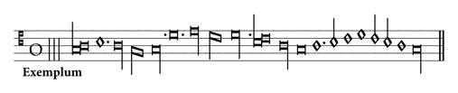
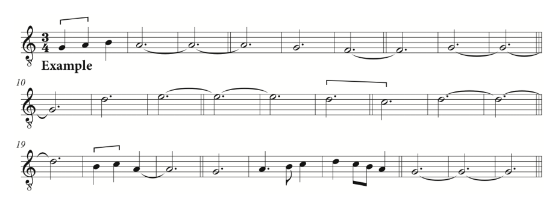
Here the punctus divisionis following the third semibreve prevents imperfection of the following long; the two puncti either side of the next single breve (termed by Tinctoris prepositus and postpositus in his Super punctis musicalibus) prevent, respectively, imperfection of the preceding and following longs, and carry the breve over to the next available position, which is to be grouped with the two ligated breves at bars 15–16; and the punctus prepositus before the first ligated semibreve at bar 20 prevents imperfection of the preceding long, as well as ensuring imperfection of the following long at bars 20–1 a parte ante and also a parte post by its own following breve.
The second circumstance which provides an exception to the norms of Tinctoris’s Ninth Rule is through the use of coloration (impletio, or filling-in), which allows for the readily recognizable regrouping or reductio of displaced notes belonging to the same mensural unit, at the same time as preventing such coloured notes from imperfecting larger notes either side of them, as would otherwise be required:
Et si note minores que aliter iuxta premissam regulam imperficerent aliquam maiorem implete sunt, non ipsam imperficient, immo ad alias similiter impletas reducentur, ut hic patet: [Figure 9]
And if smaller notes which otherwise, according to the above rule, would imperfect some larger note are filled in, then they will not imperfect this larger note, but rather they will be cross-grouped with other notes similarly filled in, as is shown here: [Figure 9]
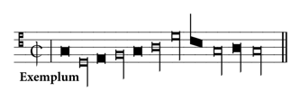
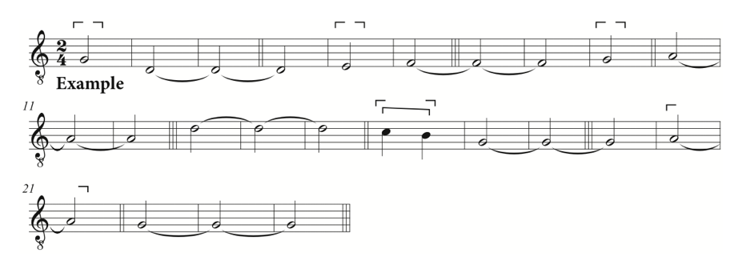
Here the breves at bars 1, 5 and 9 (and the breve-equivalent ligature at bar 16) are prevented from imperfecting their following longs, as they would normally be required to do, by their coloration, which instead indicates their reductio, or cross-grouping, with each other and the blackened long at bars 20–21 into a full unit of major modus. (Slightly confusingly for the reader, however, this last blackened long is in fact imperfected by the breve-equivalent ligature at bar 16, a usage of coloration which Tinctoris does not explicitly describe until later in the treatise, at Book 2, Chapter 8.) It should be noted, however, that although in this particular case the breves are already intrinsically imperfect, this use of coloration as an indication solely of reductio, as Tinctoris shows us elsewhere, also allows for a coloured note in perfect mensurations to remain perfect where it is itself the agent of imperfection of another larger coloured note with which it is reducta: for instance, a perfect breve blackened to indicate syncopated imperfection of a later or earlier blackened long. As he says towards the end of the Liber imperfectionum:
Et quoniam notarum impletio non solum imperfectionem, sed reductionem, sesquialteram et duplam significant, qualiter in promptu scitur dum in aliquo cantu huiusmodi notarum impletio invenitur quod istorum quattuor signorum accipiendum sit, in nostro Proportionali musices amplissime declaravimus. Quapropter super hoc in isto tractatu nihil dicimus.
And since the filling-in of notes indicates not only imperfection, but also cross-grouping, sesquialtera and dupla proportion, I have comprehensively explained in my Proportionale musices how to identify readily which of these four indications should be adopted, whenever such filling-in of notes is encountered in some piece of music. For this reason I am not saying anything on the subject in the present treatise.
The third circumstance providing an exception to the Ninth Rule relates to the implications of ligature configuration for our reading of how notes may or may not be grouped together for the purposes of resolving issues of imperfection:
Si vero note minores que aliter secundum eandem regulam imperficerent aliquam maiorem precedentem ligate sint cum alia maiori sequente aut simili que cum eis maiorem ipsam precedentem imperficere non possit, non illam imperficient, immo cum istis numerabuntur, ut hic patet: [Figure 10]
But if smaller notes which, according to this same rule, would otherwise imperfect some preceding larger note are ligated with another larger or like-value note following, which along with the smaller notes cannot imperfect that preceding larger note, then they will not imperfect it, but rather will be counted together with those notes, as is clear here: [Figure 10]
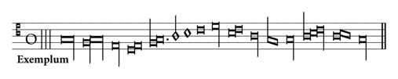
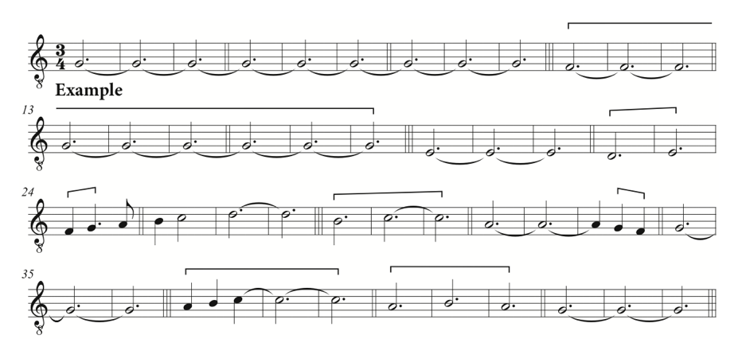
In this meticulous example, the long at bars 10–12 cannot imperfect the preceding maxima by itself, since it is ligated with its own following maxima, and the ligature as a whole obviously cannot imperfect the former. Analogously, at the next mensural level down, the initial ligated breve at bar 22 is prevented from imperfecting its preceding long. On the other hand, the first ligated semibreve at bar 33 can contribute to the imperfection of the preceding long at bars 31–3, since the whole ligature can do so; but the initial semibreve of the ligature at bars 37–9 cannot act similarly, since the value of that whole ligature, itself involving an internal imperfection of its finalis long, exceeds that which can imperfect its own preceding long at bars 34–6. And finally, the first breve of the ligature at bars 40–2, which if self-standing could in principle contribute further to a maximal imperfection of its preceding long (quantum ad totum), even after its imperfection quantum ad partes propinquas by its two ligated semibreves, cannot now do so by virtue of its ligated status with two other like-value notes.
Returning, then, to the case of the six-note ligature towards the end of Figure 7: although the configuration does not exactly match Tinctoris’s later construction (i.e. here the preceding larger note is itself ligated to the smaller notes), it is nevertheless clear that here the ligated breve immediately following the initial long cannot imperfect that long, even though the breves within the ligature are imperfect in number, and hence might be thought able to release one for this purpose. Part of the calculation of this long’s value involves us in returning to consider the syncopated group of six semibreves (or two breves’ worth) left incomplete at minor modus level earlier in the example (bars 4 and 7–8). One of the breves, therefore, from this six-note ligature – presumably, in theoretical terms, the first of the four – must be deemed to complete this unit of minor modus at a distance, so that the remaining three breves in the ligature stand ‘in perfect number’ as a unit of minor modus in its own right, and the initial long must thereby remain perfect. Finally, then, the long at the end of this ligature is simply imperfected by the four following ligated semibreves quantum ad totum et unam partem propinquam, reducing it in value from nine to five semibreves’ worth, since according to Tinctoris’s precept – and deliberately distinguished from the context of the six-note ligature – these are ligated, smaller notes which can together imperfect a preceding larger note, and therefore do so. Thus ends, albeit in a curiously abrupt fashion from a musical point of view, this peculiarly taxing example – though, as is Tinctoris’s custom, the final phrase is once more shrewdly calculated to complete the deep-level metre, at the unit of major modus, correctly.
These examples allow us at least to glimpse Tinctoris’s continuing intellectual fascination with such notational issues, even though his own musical landscape of the 1470s is obviously very different from that of the ars nova theorists and composers who started the ball rolling some 150 years earlier. One suggestive distinction between Tinctoris’s world and that of Johannes de Muris concerns the nature of complexity itself. As Tanay has outlined in her book, the framework of fourteenth-century sophistical logic, and its ramifications for conceptions of temporal continuity and hence musical theory, tended towards presenting prima facie complexity as a means of elucidating simple, underlying truths (Tanay 1999: esp. Chapter 7); and, as we all know, there are many examples of subtilior composition that present a kind of ludic counterpoint between the sophistry of the material notation and its relatively straightforward outcome in real time. Looking at the notation presented in Tinctoris’s imperfection examples, though, the opposite is rather the case, in that the simplicity of the tools (the notes on the page) belies a high degree of underlying, conceptual sophistication.
It should be emphasized that within the constraints of the present essay I have been unable as yet to carry out a full census of theoretical writings from the whole relevant period, to trace the evolution of these more advanced contexts for imperfection, and, we shall see shortly, alteration. There is certainly scope for such a survey: to take but one small instance, the author of the third Berkeley treatise, itself a revision of the Libellus practice cantus mensurabilis secundum Johannem de Muris, seems to be acknowledging the notion of displacement and reductio at a simple level in both imperfection and alteration – though the text at least in the latter case is rather problematic (Ellsworth 1984: 158–9 and 166–7). On the other hand, Tinctoris’s younger contemporary Franchino Gafori seems distinctly uninterested in such notational complexities in the respective sections of his Practica musice of 1496 (Book 2, Chapters 11–13) – an example of a modernising tendency between these two generations of writer which is also noticeable in other domains of music theory – even though there is also a separate chapter on syncopation itself (Book 2, Chapter 15), and some of his discussion does exemplify relatively straightforward reductio of displaced elements of a perfect unit (Gaforus 1496: fols. bb ij–[cc iv]; Gaforus 1969: 94–120). Gafori and Tinctoris in fact may have slightly differing views on how the notion of syncopation should be construed. For Gafori, sincopa in a piece of measured music is explicitly closely related to reductio in being defined as ‘the regrouping of a note [located] on the other side of one or more notes larger than itself, with one or more others with which it may combine in reckoning’ (‘Sincopa in cantilena mensurabili est reductio notulæ ultra maiorem vel maiores suas ad aliam vel ad alias quibus conveniat in connumeratione’; see Gaforus 1496: fol. cc iiij verso (Book 2, Chapter 15)). Tinctoris, though, may be read as offering a rather more technically specific definition, in that the interposed note itself, creating the ‘gap’ of the sincopa, should be of a higher value than that of the note which has been divided to form the regroupable elements. (‘Sincopa est alicuius note interposita maiore per partes divisio’: ‘Syncopation is the division into parts of some note through the interpolation of a note of higher value’; see Tinctoris 2004: 44.) In other words, for Tinctoris, in minor prolation the simple sequence minim–semibreve–minim would seem not to count as strict sincopa, whereas the sequence minim–breve–minim would. For Gafori, on the other hand, both instances would count under his own definition. It is possible, however, that this is an over-reading of Tinctoris’s unhelpfully concise definition, since an alternative interpretation of his Latin might be something more like ‘Syncopation is the partial separation of some note by means of the interpolation of a note of higher value.’ In this case the ‘some note’ would represent the same entity as Gafori’s ‘notula’, and the two definitions become more or less identical. Even so, it is not entirely clear in this reading what the sense of ‘per partes’ as ‘partial’ (a standard classical meaning) might really be trying to convey, unless something akin to ‘temporary’, that is, before the conceptual regrouping of the elements. Gafori’s brief chapter on sincopa goes on to comment on certain other purported technical restrictions, such as whether the syncopation of a minim can bridge a rest of greater value than a semibreve, and similarly at other mensural levels; but these issues are of only secondary relevance to the present discussion. It is worth recalling too, that Bonnie Blackburn long ago drew attention to the fact that Tinctoris explores the practice of displaced imperfection in his complex pedagogical motet Difficiles alios delectat pangere cantus; the practice was discussed later by Giovanni del Lago in a letter to Lorenzo Gazio of 6 May 1535, in which it is described as ‘imperfettione mediata’ or mediated imperfection (Blackburn 1981: 94–5; Blackburn 1991: 841–2 and 855).
If the notion of syncopation or displacement within the process of imperfection is generally poorly understood by scholars today, a similar phenomenon in the process of alteration seems to be equally unappreciated. Bearing in mind the apparent rarity of this phenomenon in late fifteenth-century polyphony, its coverage by Tinctoris comes remarkably high on the list of general rules for alteration given in his brief Tractatus alterationum, again from the early to mid-1470s. His Second General Rule, in its entirety, states:
Secunda generalis regula est quod non refert si due note sole invente, quarum ultima venit alteranda, sint continue aut syncopate, quia dum in istis sicut in illis requiritur perfectio, consequenter accidit alteratio, sicut hic: [Figure 11]
The second general rule is that it does not matter whether two notes found by themselves, of which the last is due to be altered, are placed directly next to one another or in syncopation, since for as long as perfection is required in the latter, just as in the former, then alteration occurs as a consequence, as here: [Figure 11]
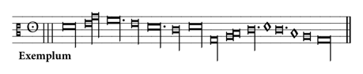

His example (Figure 11) shows with great clarity instances of not only ‘normal’ alteration, that is, the doubling in value of the second of two notes within a perfect mensuration before a note of the next larger value (e.g. the long at bars 13–18 of Figure 11b, and the breve at bars 56–7), but two further instances where the altered note is, indeed, separated from its ‘partner’. (Tinctoris often uses the quasi-technical term nota socia, or just socia, to designate a note – in other contexts as well as imperfection and alteration – which in some sense ‘partners’ one or more other notes.) As with some of the earlier examples of imperfection, the use of the dot becomes crucial to the correct interpretation. It would not be at all surprising if we tried initially to read the punctus attached to the maxima at bars 31–9, and that attached to the breve at bars 61–2, as dots of separation, grouping the maxima with its preceding, apparently imperfecting, long, and the breve with its preceding, apparently imperfecting, semibreve. But, as with some of the imperfection examples demonstrated above, Tinctoris argues in the Scriptum … super punctis musicalibus that this would be redundant, or asinine (Tinctoris’s often commented punctus asineus: see Tinctoris 1975: i. 194–5; new text forthcoming within present project), since if such an imperfection process were intended, no dot would be required, and Tinctoris apparently has no time for any notion of a ‘cautionary’ dot of separation. So we ought more properly to construe these dots as puncti perfectionis, clarifying the full perfect value of the notes to which they are attached. (Similarly, of course, the dots attached to the maxima at bars 19–27, and to the long at bars 58–60 are even more clearly puncti perfectionis, to prevent imperfection a parte post.) The long preceding this dotted maxima, therefore (bars 28–30), and the semibreve preceding the dotted breve (bar 61), need to be read as note socie of, respectively, the long and semibreve following (bars 40–5 and 62). And since, in turn, each of these following notes is placed before a note of the next highest value in the requisite perfect mensuration (i.e. the d maxima at bars 46–51 in perfect major modus, itself imperfected before its following g long; and the a breve at bar 63 in perfect tempus) they must be altered through syncopation, as shown in the transcription here. The final test of the accuracy of this interpretation – apart from the obvious fact that this is the very point that Tinctoris is exemplifying – is that the example resolves itself at the end correctly, as with the complex imperfection cases, with the final maxima coinciding with the new unit of major modus, thus completing the deepest level of mensuration with Tinctoris’s customary fastidiousness. Moreover, and again analogously to the case of displaced or mediated imperfection discussed above, we know from Bonnie Blackburn’s work that Tinctoris also explores this extended, syncopated type of alteration in his motet Difficiles alios, a usage once more commented upon by the later writer Giovanni del Lago in his letter of 1535 to Lorenzo Gazio (Blackburn 1981: 93–4; Blackburn 1991: 836 and 852).
From a practical point of view, we can readily see that an incorrect interpretation (for instance, of the dots discussed above as puncti divisionis rather than perfectionis) here induces a significant loss of note-value over the course of the example: just the three notes from bars 28 to 45, say, would lose six breves’ worth. Many modern editors, I think, confronted with such a passage in a ‘real’ polyphonic source without awareness of the possibility of syncopated alteration, and perhaps with a looser sense of distinction between the types of punctus, might well be tempted to argue for a corrupt reading in the manuscript, and to make editorial emendations in order to fill the apparent gaps. Even though the research into such implications is still at a relatively early stage, this does make me wonder, nevertheless, whether there are instances out there – say in the primary sources of Okeghem, Obrecht or De la Rue, for example – where such syncopated alteration, or complex imperfection structures like the ones we have seen, have been employed by the composer, perhaps in elaborate cantus firmus tenor configurations, but subsequently edited out, either by modern scholars or by fifteenth-century copyists who were themselves not sufficiently aware or confident of the subtleties. Such emendations could, of course, potentially have fatal implications for certain kinds of numerological structuring which might be underpinning the work in the composer’s own planning process. Furthermore, it is surely no coincidence that recent research by Ian Darbyshire on lost notational complexities in the Tudor festal masses of Robert Fayrfax (Darbyshire 2004) reveals instances where suggested original multi-colour notations, disguised through later simplification in the surviving sources, also involve very tricky syncopated alteration and imperfection, much more taxing and long-ranging even than Tinctoris’s examples. This itself raises interesting questions about the dissemination of advanced mensural theory in early Tudor circles; but, equally, future work will need to establish whether parallel instances can be found, perhaps under the surface, in continental European, polyphonic sources of the late fifteenth or early sixteenth centuries.
Sometimes it appears that, in the current musicological climate, closely focused studies of material, notational issues such as these are regarded as somehow out of kilter with the times – even plain unsexy. This is surely not simply a shame, but actually a misprision of the deeply contextual nature of this notation within the whole intellectual and philosophical culture of its practitioners. We sometimes need reminding, it seems, that the mensural notations of the late Middle Ages and their more recent descendants, for all their limitations and problematics, represent one of the great intellectual achievements of Western Europe. Looking again at texts such as those of Tinctoris, it becomes doubly clear to me that something as apparently unpromising as imperfection and alteration can lead us to explore those deeper connections within late medieval thought in fascinating and still unpredictable ways.